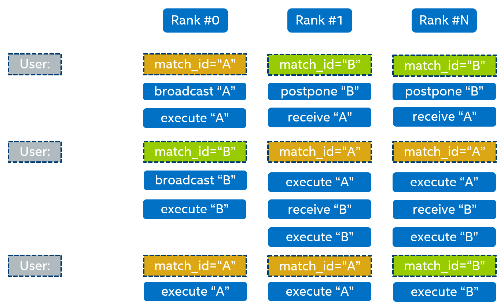

Unordered collectives support¶
Some deep learning frameworks deploy local scheduling approach for the graph of operations, which may result in different ordering of collective operations across different processes. When using communication middleware that requires the same order of collective calls across different ranks, such scenarios may result in hangs or data corruption. This requires complicated coordination logic to maintain the same ordering.
In contrast, oneCCL provides a mechanism to arrange execution of collective operations in accordance with the user-defined string identifier. To set an identifier, use match_id field in operation attribute.
Unordered collectives’ execution is coordinated by the zero-id rank (root rank). When root rank receives a user request with a non-empty match_id for the first time,
it broadcasts information about the user identifier to all other ranks and assigns an internal oneCCL identifier that will later be used with all following operations with the same match_id.
When a non-root rank receives a user request with a non-empty match_id for the first time, it postpones operation execution until it receives a message from the root rank.
Once the message is received, the rank creates an internal oneCCL identifier that will be used for all following operations with the same match_id.
Unordered collectives are controlled by CCL_UNORDERED_COLL.
{kind=link}